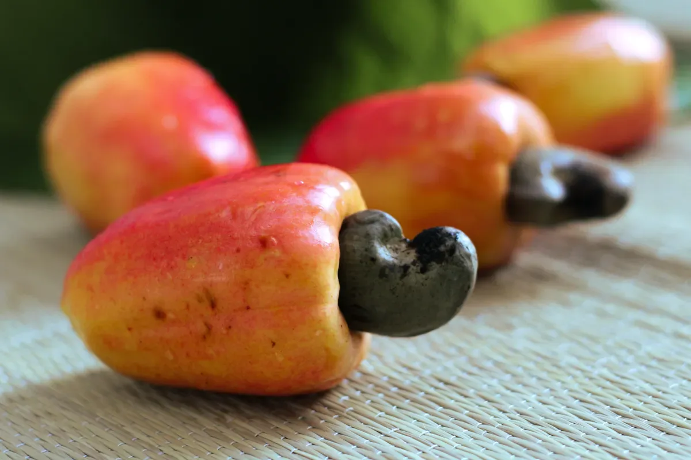
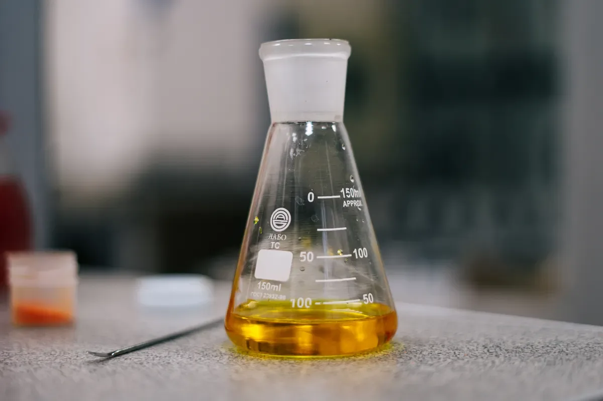

PRD-03
PRD-03
Polyphenolic Liquid Extract
Tannin in Liquid Form
Concentrated plant-derived liquid tannin for leather tanning and water conditioning.

A paste or extract made from cashew testa, the thin skin removed from cashew kernels. Contact AEI for current batch information and available grades.
Cashew testa is the thin skin removed from cashew kernels during processing. AEI uses this material to make Cashew Testa Paste / Catechin for industrial buyers.
The product may be relevant to leather processing and specialty chemical applications. Ask us for the current grade, batch analysis and sample availability before evaluating it in your process.
Application suitability and dosage are determined through customer laboratory trials based on required catechin/tannin reactivity:
Vegetable retanning paste/extract providing fullness, buffing character, and warm reddish-brown undertone in leather articles.
Evaluated as a condensed-tannin reactive modifier in phenolic resin synthesis, plywood binders, and specialty coatings.
Polyphenolic colorant and iron-tannate / mordant complexing input for technical dyeing and pigment preparations.
Evaluated by chemical formulators for radical-scavenging, rust-conversion, and industrial stabilization systems.
| Parameter | Reference / Status |
|---|---|
| Product Designation | Cashew Testa Paste / Catechin |
| Botanical Feedstock | Cashew Kernel Testa Skin (Anacardium occidentale) |
| Physical Appearance | Paste or extract; confirm available grade |
| Polyphenol / Catechin Assay | Request current batch analysis |
| Packaging Formats | Confirm available options when enquiring |
| Dispatch Origin | Gandrajupalli, Chittoor District, Andhra Pradesh |
PRD-03
Concentrated plant-derived liquid tannin for leather tanning and water conditioning.

PRD-02Extracted non-edible oils for soap manufacturing and industrial saponification.
 PRD-01
PRD-01
Densified post-extraction botanical pellets for industrial boilers and heating systems.